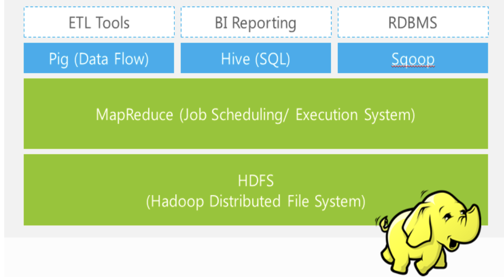

(Apache 基金会的) Hadoop¶
Hadoop 是一个 实现了mapreduce算法 的开源的分布式并行编程框架。open-source implementation of frameworks for reliable, scalable, distributed computing and data storage.
Goals/Requirements:
Abstract with high scalability and availability 它是一个 高可扩展性和可用性 框架
Facilitate the storage and processing of large and/or rapidly growing data sets 对大数据进行储存和处理
大数据包括 结构化和非结构化 Structured and non-structured data
Process中：Move computation rather than data 更多的还是数据的移动读取
Use commodity hardware with little redundancy 就是说那种最基本配置的标配出售的东西，因为不加任何配置就是标准有一定能力但是不贵
Simple programming models
Fault-tolerance 容错性是最重要的
architecture¶
Row/column store
Billions of rows/millions on columns
Column-oriented - nulls are free
Untyped - stores byte
Zookeeper 。Coordinating distributed applications。
Pig 。High-level language for data analysis
Expresses sequences of MapReduce jobs
Data model: nested “bags” of items
Provides relational (SQL) operators (JOIN, GROUP BY, etc.)
Easy to plug in Java functions
Hive 。SQL-like Query language and Meta-store
Used for majority of Facebook jobs
“Relational database” built on Hadoop
Maintains list of table schemas
SQL-like query language (HiveQL)
Can call Hadoop Streaming scripts from HiveQL
Supports table partitioning, clustering, complex data types, some optimizations
Mahout 。Machine learning
{kind=link}

Hadoop Distributed File System¶
Problems and Solutions of HDFS.
- Data is too big to store on one machine
💡HDFS: store the data on multiple machines
- High end machines are too expensive
💡HDFS: Run on commodity hardware
- Many commodig hardnare will fail occasional
💡HDFS: Intelligent enaugh to handle harduard failure
- How to handle date on failed hardward
💡HDFS: Data replication
Goals of HDFS:
Verg Large Distributed File System Scalability
10K nodes, 100 million files, 10PB
- Assumes Commodity Hardware Failure Tolerane
Files ane replicated to handle hardware failures
Detect failures and recover from them
- Optimized from Batch Processing High Throughaut
Data locations exposed so that computations can move to where data resides
Provide very high aggregate bandwidth
With interfaces to move application operation closer to data to reduce data communication costs
HDFS is designed to just work, to process Large data sets with write-once-read-many (WORM) semantics. it’s not for low latency access
Can be built out of commodity hardware
Distributed, with some centralization
A Hadoop Cluster includes a single master and multiple slave nodes.
No need for RAID on normal nodes (Raid is a very expensive storage system supporting parallel IO operations.)
Data Coherency Write-once-read-many (WORM) access model Client can only append (not override) to existing files
{kind=link}
{kind=link}
{kind=link}
{kind=link}
{kind=link}
Architecture¶
从架构位置分 |
||
|---|---|---|
Central Control Node |
NameNode |
keep track of HDFS directories & files |
The Master |
Central manager for the file system Namespace |
|
JobTracker |
dispatch compute tasks to TaskTracker |
|
Central manager for running MapReduce jobs |
||
The Slaves |
Main nodes |
accept and reply to MapReduce tasks. |
TaskTracker, TT |
accept and run map, reduce and shuffle |
|
DataNode, DN |
store needed blocks closely as possible |
DataNode, DN¶
Individual machines in the cluster
Typically 2 level architecture. 两层架构
30-40 nodes/rack. 一个rack里30-40个nodes
Nodes are commodity PCs. 都是商品PC
Uplink from one rack is 3-4 gigabit. rack之间互传是3-4千兆
Rack-internal is 1 gigabit. rack内部的nodes 是1千兆
Can run on any underlying filesystem (ext3/4, NTFS, etc) 可以在任何底层平台上使用
with Client:
Serves data and metadata to Clients
Periodically sends a report of all existing blocks to the NameNode 告诉NameNode自己存了啥数据
Store:
actual data in the local file system(e.g. ext3) 在本地储存实际数据
Stores metadata of local block (e.g. CRC)
NameNode replicates blocks 2x in local rack, 1x elsewhere. 关于自己这一台rack的local data会在自己这存两份备份，一份在别的rack那里，由NameNode记录
with others DN:
Forwards data to other specified DataNodes
NameNode¶
Single Namespace for entire cluster
The server holding the NameNode instance is quite crucial, as there is only one. 非常重要只有一个
Store:
- metadata for the files 储存元数据
like the directory structure of a typical FS(file system). ，比如说data的编号和data的储存位置。不储存data，而是data的搬运工，知道在哪里然后搬到DataNode
The entire metadata is in main memory
No demand paging of metadata
List of files, List of Blocks for each file, List of DataNodes for each block, File attributes, e.g., creation time, replication factor
- Transaction log for file deletes/adds, etc.
Does not use transactions for whole blocks or file streams, only metadata. 文件删除/添加等的事务日志。不将事务用于整个块或文件流，仅使用元数据。类似垃圾桶，在元数据那里标操作，意义上transaction，但实际储存上还是那样
with client:
is responsible for maintaining the file namespace and directing clients to datanodes;
with DataNode:
Maps a file name to a set of blocks
Maps a block to the DataNodes where it resides
- Handles creation of more replica blocks when necessary after a DataNode failure。
Replication Engine for Blocks
当某个DataNode挂了之后就搬运data——创建副本，确保data有定量的replications in DataNode
Cluster Configuration Management
Strategy¶
Block Placement - Data Pipeline¶
- Large blocks stored across a cluster 每一个file都被分成很多个block储存在一个集群
Individual files are broken into blocks of a fixed size (64MB by default);
Blocks are stored across a cluster of one or more machines;
High degree of data replication on multiple DataNodes 每块都被高度复制储存在不同DataNode上
至少三份 (3x by default) ：1st on local node；2nd on a remote rack；3rd on the same remote rack；Additional replicas are randomly placed
- Blocks are moved primarily across DataNodes 块的备份的写入主要靠DN之间传递
client retires a list of DataNodes on which to place replicas of a block from NameNodes
Client writes block to the first DataNode
The first DataNode forwards the data to the next node in the
When all replicas are written, the Client moves on to write the next block in file
- Nearest replicas are retrieved by Client in network 客户端检索最近备份的位置，通过网络直接访问
Client connects to NN to request to read data
NN tells client whichDNS to find the data block
Client read blocks of nearest replica directly from DNS
In case of node failures. clients connects to another DN that severs the missing block
- Client accesses data directly from DataNode
- why not ask clients to read blocks through NN?
present NN from being the bottleneck of the cluster
Allow HDFS to scale to large number of concurrent clients
Spreadthe data traffic across the cluster
Mapreduce¶
Written in Java, also supports Python and Ruby
Fine-grained Map and Reduce tasks:
Improved load balancing
Faster recovery from failed tasks
Parallelism in Hadoop¶
multi-threaded？
No need to handle multi-threaded codeEach Mapper / Reducer is typically single threadedAllows for restarting of failed jobsRuns entirely independent of each other in separate JVMs (Java Virtual Machines)
Load Balancing¶
Map:
Usually as many as the number of HDFS blocks being processed, this is the default, else the number of maps can be specified as a hint. The number of maps can also be controlled by specifying the minimum split size. The actual sizes of the map inputs are computed by:
Reduces:
Usually run when new DataNodes are added
Cluster is online when Rebalancer is active
Rebalancer is throttled to avoid network congestion
Locality Optimization, local 优化¶
Because some of machines are very busy, I cannot assign so many reduced to you the whole job, right? So this system level optimization should be considered locality optimization.
Master scheduling policy:
Map-Reduce queries HDFS for locations of input data
Map tasks scheduled so HDFS input block replicas are on the same machine or the same rack
Map tasks are scheduled close to the inputs when possible
Benefits:
- Thousands of machines read input at local disk speed，
It’s not random access partial from here, partial from there, take a lot of time, it’s everything is already local localised on the same place and you just by once reading everything can be available.
Provides very high aggregate bandwidth
Eliminate network bottleneck 消除网络速度瓶颈
Fault Tolerance¶
首先明确一点：Failure is norm, not an exception
我们采取的是分布式系统，这么多台PC都同时都不出问题概率为0，哪怕一台报错概率极小。所以我们一定要做好确保 Fault Tolerance 的工作，包括:
replication 有备份
checksum 时刻检查是否出错
Data transfer bandwidth is critical (location of data) 数据传输带宽至关重要（数据位置）
**Automatic re-execution on failure**§ In a large cluster, some nodes are always slow or flaky
Framework re-executes failed tasks
Worker failure:
DataNode failure
Detect via periodic heartbeats
DataNodes send heartbeats a Block Report from each DataNode to the NameNode. Once every 3 seconds via a TCP handshake
Recover.
Data correctness
Detect via Checksums
Client computes checksum per 512 bytes. DataNode stores the checksum
Master failure:
Secondary NameNode
同步運行 The other can be replaced immediately without interrupting.
Copies FSImage and Transaction Log from NamNnode to a temporary directory
Merges FSImage and Transaction Log into a new FSImage in temporary directory
Uploads new FSImage to the NameNode§ Transaction Log on NameNode is purged